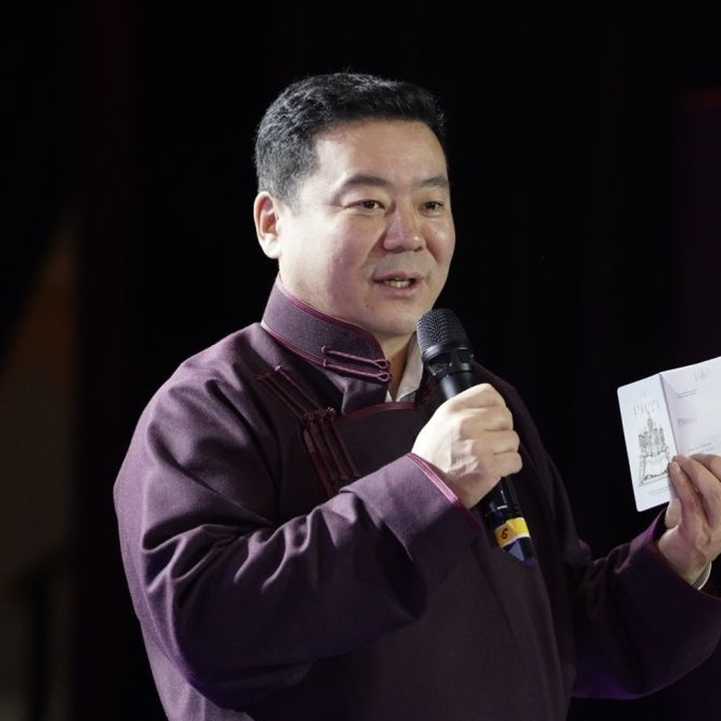
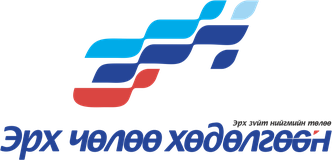
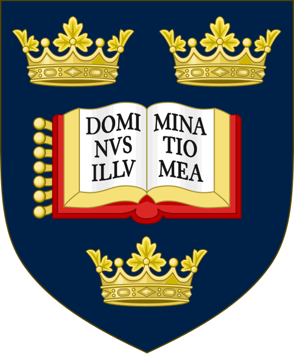
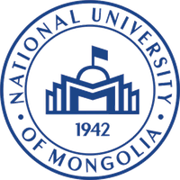
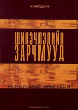
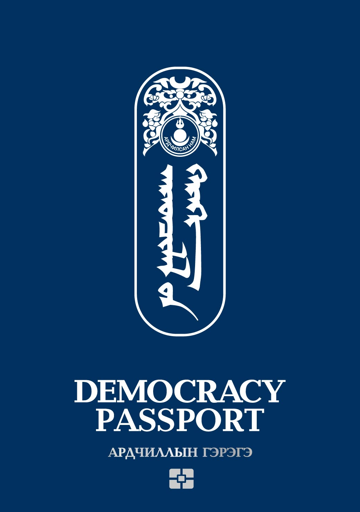

Эдийн засагч, төрийн бодлогын судлаач. УИХ дахь Ардчилсан намын бүлгийн ахлах зөвлөх. Оксфордын Их Сургуулийн төрийн бодлогын магистр.

Мөнхжаргалын Чимэддорж нь Монгол Улсын Их Сургуулийг бизнесийн удирдлагын бакалавр (2005), магистр (2011) зэрэгтэй, Оксфордын Их Сургуулийг төрийн бодлогын магистр (2018) зэрэгтэй төгссөн эдийн засагч, төрийн бодлогын судлаач юм.
Эдийн засгийн өрсөлдөх чадвар, хөдөлмөр эрхлэлт, засгийн газрын хөрөнгө оруулалтын үр ашгийн чиглэлээр арав гаруй жил судалгаа хийсэн. Хөдөлмөрийн зах зээлийн урт хугацааны таамаглалын загвар, төгсөгчдийн болон залуучуудын хөдөлмөр эрхлэлтийн үндэсний судалгаануудыг санаачлан эхлүүлж, Хөдөлмөрийн яамны харьяа Хөдөлмөрийн Судалгааны Институтийн захирлаар ажиллаж байсан.
2017 оноос АН-ын Үндэсний Бодлогын Хорооны гишүүнээр гурван удаа сонгогдон ажиллаж байна. 2023 оноос УИХ дахь АН-ын бүлэгт эдийн засгийн бодлого хариуцсан зөвлөхөөр ажиллаж, 2024 оноос бүлгийн ахлах зөвлөхөөр томилогдсон. 2026 оноос АН-ын дэргэдэх Гэрэгэ Бодлогын Хүрээлэнгийн удирдах зөвлөлийн даргаар ажиллаж байна. Намын үзэл баримтлалын шинэчлэлийг оройлон гүйцэтгэж, 2026 оны «Ардчиллын гэрэгэ» баримт бичгийн агуулгыг боловсруулсан. "Шинэчлэлийн зарчмууд" (Монсудар, 2011) номын зохиогч. Сүүлийн жилүүдэд эрчим хүчний шилжилт, сэргээгдэх эрчим хүчний бодлогын чиглэлээр төвлөрөн ажиллаж байна.


Master of Public Policy (MPP).

Монгол Улсын Их Сургууль, Менежмент хөтөлбөр.
Монгол Улсын Их Сургууль, Эдийн засгийн сургууль, Менежмент мэргэжил (2001–2005).

Ардчиллын үйл явцыг гүнзгийрүүлж, жам ёсны зүй зохицолт нийгмийг бүтээхэд чиглэсэн зарчмуудыг томьёолсон бүтээл. ISBN 978-9996-2-0574-3.

Ардчилсан намын гишүүнчлэлийг шинэчилсэн, үндэсний үнэт зүйлс ба эрх чөлөөний үзлийг багтаасан баримт бичгийн агуулгыг боловсруулсан.
Милтон Фридманы сонгодог эссэгийн орчуулга — чөлөөт зах зээлийн үзлийн суурь бичвэрийг монгол уншигчдад хүргэсэн.
Унших →Нүүрсний хулгай тойрсон хямрал ба парламентийн засаглалын эрсдэлийн тухай шинжилгээ.
Унших →Ардчилсан намын шинэчлэлийн тухай бодлогын эссэ.
Унших →«Хүндэтгэл», «Тэнгэрийн цаг», «Хэлмэгдэгсдийн дурсгалыг хүндэтгэх өдөрт», «Хямралын засагт хяналт авчрах сонгууль» зэрэг нийтлэлүүд.
baabar.mn дээрх бүх нийтлэл →ГШХО-ын дөрвөн төрөл ба Монголын хөрөнгө оруулалтын бүтцийн шинжилгээ: макро тогтвортой байдал, дэд бүтэц нь татварын хөнгөлөлтөөс чухал болох нь.
Эх нийтлэл →Банкны монополь, өндөр хүү ба мэдлэгт суурилсан эдийн засагт шилжих 20 жилийн хөрөнгө оруулалтын бодлогын санал.
Эх нийтлэл →Их Британийн Элчин сайдын яам, UK Alumni Association Mongolia-ийн арга хэмжээнд тавьсан илтгэл — Хофстедийн соёлын хэмжүүрээр Монголчуудын дүр төрхийг задалсан.
Үзэх →Технологи ба боловсролын ирээдүйн тухай англи хэлээр тавьсан илтгэл.
Үзэх →Боловсрол, ялзрал, төрийн хязгаарын тухай 1 цагийн ярилцлага — бүрэн бичвэртэй.
Бүрэн бичвэрийг унших →2016 оны шинэчлэлийн гурван зорилт, дүрмийн алдаанууд, дотоод сонгууль дахь мөнгөний тухай 55 минутын ярилцлага — бүрэн бичвэртэй.
Бүрэн бичвэрийг унших →